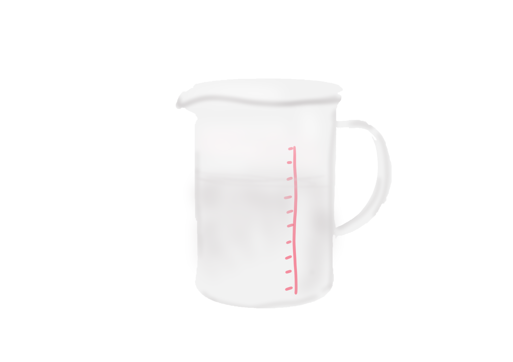
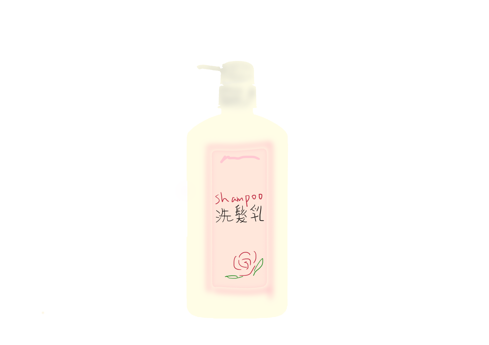

油脂
油脂是什麼?

甘油是一種眾所周知的保濕劑，可防止化妝品和個人護理產品過早失去水分，因此不會乾燥。
丙三醇 - 有時稱為甘油 -是所有動植物脂肪和油的天然成分。它可以從碳水化合物材料（如蔗糖或玉米糖漿）或物質如丙烯合成。 合成形式與天然存在的甘油化學相同。長期實驗室研究表明，身體處理合成衍生甘油的方式與處理天然衍生甘油的方式相同。
美國 CIR：2014年，CIR評估了甘油的可用科學數據，該數據顯示單次和重複劑量後口服和皮膚（皮膚）副作用較低。另外，數據顯示在人體臨床研究中沒有報導過敏性皮膚反應。 評估所有科學數據，CIR得出結論認為，甘油作為化妝品和個人護理產品成分在目前的使用條件下（即免洗產品高達78％，洗去型產品高達68％）是安全的。

丙二醇和聚丙二醇吸引水分並起潤濕劑的作用;在保濕劑中發現，通過減少剝落和恢復柔韌性來增強皮膚外觀。 丙二醇是化妝品和個人護理產品中使用最廣泛的成分之一，它也可用作降粘劑，溶劑和香料成分。它用於許多類型的化妝品配方，包括洗面奶，保濕劑，沐浴皂，洗髮水和護髮素，除臭劑，剃須劑，香水等。
美國 CIR：2012年，美國化妝品成分評估（CIR）專家組審查了化妝品和個人護理產品中使用的丙二醇和聚丙二醇的安全性數據。他們的結論是，在配製成無刺激性的化妝品時，兩者都是安全的。

丁二醇，己二醇，乙氧基二甘醇和二丙二醇可作為溶劑和降粘劑在個人護理產品中使用。
丁二醇或1,3-丁二醇溶解大多數精油和合成香料物質。丁二醇，己二醇，乙氧基二甘醇和二丙二醇是乙二醇或乙二醇醚。二元醇是一類含有兩個羥基的醇，也稱為二醇。
美國 CIR：CIR專家小組評估了科學數據並得出結論：丁二醇，己二醇，乙氧基二甘醇和二丙二醇可安全地用於化妝品和個人護理產品。 2004年，CIR專家組審議了關於丁二醇及相關成分的新數據，並重申了上述結論。

當用於化妝品和個人護理產品時，荷荷巴籽油，荷荷巴籽蠟以及來自荷荷巴油的成分具有以下功能。
乳液穩定劑 - 水解荷荷巴酯酯成膜劑 - 水解荷荷巴酯
頭髮調理劑 - 荷荷巴油籽油，荷荷巴油種子蠟，荷荷巴油黃油，水解荷荷巴油酯
皮膚調理劑 - 潤膚劑 - 荷荷巴酯，異構荷荷巴油
皮膚調理劑 - 其他 - 荷荷巴醇酒精
皮膚調理劑 - 閉塞 - 荷荷巴油籽油，荷荷巴油種子蠟，荷荷巴油黃油，氫化荷荷巴油，水解荷荷巴酯，合成荷荷巴油
表面活性劑 - 乳化劑 - 水解荷荷巴酯
增粘劑 - 非水性 -荷荷巴種子蠟，荷荷巴酒精
荷荷巴籽油是通過壓制亞利桑那州，加利福尼亞州和墨西哥索諾蘭和莫哈韋沙漠原生常綠灌木的籽粒獲得的。 這種油與其他普通植物油的不同之處在於，它幾乎完全（97％）由單分子不飽和直鏈酸和高分子量醇（碳鍊長度為36至46）的蠟組成。這使得荷荷巴油及其衍生物荷荷巴酯與皮脂和鯨油相比更像傳統植物油。
美國 CIR：CIR專家小組評估了科學數據，並根據現有資料得出結論，荷荷巴油和相關成分可作為化妝品成分使用。
由於其優異的皮膚和頭髮調理性能，D5和D6是用於化妝品和個人護理產品的主要環甲基聚矽氧烷。 環甲基矽氧烷成分用於需要矽氧烷載體流體的最終完全蒸發的化妝品中。通過這種方式，它們對於需要塗覆皮膚但不會在後續保持粘性的產品中是有用的，如除臭劑和止汗劑。它們提供其他重要的產品性能優勢，例如促進順滑的紋理和均勻的應用。因此，它們也可以在防曬霜，洗髮劑，調理劑，保濕劑，乳液等中找到。
基本結構對於所有環甲基矽氧烷都是常見的：矽氧烷單元的環狀骨架（即矽和氧與碳和氫分子連接，所有在自然界中發現的非常常見的元素）。速記命名是基於環狀結構中矽氧烷基團的數量（見圖1）。因此，環甲矽油D5（也稱為環戊矽氧烷）具有這些基團中的五個，環甲矽油D4（也稱為環四矽氧烷）具有四個等等
美國 CIR：在1991年，CIR專家小組審查了環甲矽油（定義為環甲矽油化合物與3-7矽氧烷基團的混合物（即D3-D7））的可用安全性信息，並得出結論認為在目前的使用實踐中它是安全的。2009年，為了考慮新的數據，並包括現在確定為獨立的化妝品成分的個體鏈長的化合物專家小組重開環聚甲基矽氧烷的報告，他們的檢討包括D4，D5，D6和D7。考慮到所有的額外數據，專家小組再次得出結論，根據目前的使用習慣，這些環甲矽油成分是安全的。

聚二甲基矽氧烷用於配製各種化妝品和個人護理產品，包括面霜和乳液，沐浴皂，洗髮水和頭髮護理產品，其主要功能為：
消泡劑
頭髮調理劑
皮膚調理劑
皮膚保護
美國 CIR：2003年，美國化妝品成分評審專家組審查了二甲基矽油的安全性數據以及一組密切相關的矽聚合物，主要用作化妝品和個人護理產品中的皮膚和頭髮調理劑，並得出結論認為聚二甲基矽氧烷是安全的如當前所用。

用於化妝品和個人護理產品時，椰子油和椰子酸以及衍生自椰子油和椰子酸的成分具有以下功能：
防結塊劑 - 可可酸鎂
乳液穩定劑 - 椰子醇，丁二醇椰油酸酯
頭髮調理劑 - 椰子油，
不透明劑 - 氫化椰子酸
皮膚調理劑 - 潤膚劑 辛酸/癸酸/椰油甘油酯，椰油甘油酯，椰油酸乙基己酯，椰油酸異癸酯，椰油酸月桂酯，椰油酸甲酯，椰油酸辛基十二烷酯，椰油甘油酯
皮膚調理劑 - 其他 - Cocus Nucifera（Coconut）Oil，Pentaerythrityl Cocoate
皮膚調理劑 - 閉塞性 - 椰子油，氫化椰子油，椰子油癸基酯，癸基椰油酸酯，月桂基椰油酸酯，十三烷基椰油酸酯
滑爽修飾劑 - 椰子酸鎂
表面活性劑 - 清潔劑 - 椰子酸，氫化椰子酸，椰油酸鉀，椰油酸鈉，椰油酸甘油酯銨鹽，椰油酸甘油酯硫酸鈉，氫化椰子油酸鉀，氫化椰子油酸鈉
表面活性劑 - 乳化劑 - 椰油酸鉀，椰油酸鈉
表面活性劑 - 泡沫促進劑 - 椰子醇
粘度增加劑 - 水溶液 - 椰子醇增粘劑 - 非水性 - 椰子醇，丁二醇椰油酸酯，椰油酸鎂
椰子油提取自成熟椰果肉中的食用油。 椰子油是低鍊長脂肪酸的來源，包括月桂酸，癸酸，肉荳蔻酸和棕櫚酸。傳統使用椰子油和椰子酸，椰油酸鉀和椰油酸鈉的鹽在製造肥皂中。椰子油有許多其他用途，包括烘焙，糖果製作和蠟燭製造。
美國 CIR：評估了科學數據，並得出結論認為，椰子油和椰子酸以及椰子油和椰子酸製成的其他成分可安全地用作化妝品成分。

油棕（棕櫚）油，Elaies Guineensis（棕櫚）油，氫化棕櫚油和氫化棕櫚核油主要用作皮膚調理劑-閉塞。 氫化棕櫚油成分也可用作增粘劑 - 不含香料。
油棕（棕櫚）油，棕櫚內核油，氫化棕櫚油和氫化棕櫚仁油，從所獲得的油棕樹。 粗棕櫚油是β胡蘿蔔素最豐富的天然來源之一，它為棕櫚油提供了深紅色。 在精製過程中，β-胡蘿蔔素從棕櫚油中完全去除。棕櫚油主要用於製造烹飪脂肪和人造黃油。
美國 CIR：評估了科學數據並得出結論認為Elaeis Guineensis（Palm）Oil，Elaeis Guineensis（Palm）Kernel 油，氫化棕櫚油和氫化棕櫚仁油在化妝品和個人護理產品中使用是安全的。

向日葵（向日葵）籽油和從葵花籽油衍生的成分的以下功能：
皮膚調理劑 - 潤膚劑 - 葵花籽油甘油酯，葵花籽油甘油酯
皮膚調理劑 - 其他 - 向日葵（向日葵）籽油
皮膚調理劑 - 閉塞性 - 向日葵（向日葵）籽油，氫化向日葵籽油
表面活性劑 - 清潔劑 - 葵花籽酸
表面活性劑 - 乳化劑 - 葵花籽油甘油酯
增粘劑 - 非水 - 氫化向日葵籽油
植物衍生（植物）成分是最早的化妝品之一。天然著色劑，用於舒緩和防蟲害的植物汁液，以及用於賦予氣味的芳香油在古代都是已知和使用的。 使用植物作為化妝品成分的來源是在我們的科學知識允許創造新材料以改善大自然所提供的產品之前生產用於清潔，保濕，遮蓋瑕疵並且甚至治療輕微皮膚狀況的產品的唯一方式。 向日葵（向日葵）籽油是從向日葵向日葵的種子表達的油，主要由亞油酸和油酸的甘油三酯組成。它通常在食物中用作煎炸油，並提供比任何其他植物油更多的維生素E.
美國 CIR：評估了向日葵（向日葵）籽油，氫化向日葵籽油和葵花籽酸的安全性。CIR專家小組評估了科學數據並得出結論，這些成分在化妝品和個人護理產品中用作成分是安全的。 用於配製化妝品的植物和植物衍生成分通常溫和且安全。在銷售成品化妝品之前，每種成分的安全性必須符合21 CFR 740.10的要求。化妝品成分的安全性證明可能包括眼部和皮膚刺激以及變應原性，光毒性，光致變性和致突變性的測試，取決於應用或預期用途。

橄欖果油和橄欖油成分報導了以下功能：
皮膚調理劑 - 閉塞性 - 油橄欖（橄欖）果油，氫化橄欖油
表面活性劑 - 清潔劑 - 橄欖酸，橄欖酸鉀，橄欖油鈉
表面活性劑 - 乳化劑 - 橄欖酸鉀，橄欖酸鈉
增粘劑 - 非水 - 氫化橄欖油，橄欖油鈉
橄欖果油是從Olea europaea的成熟果實中獲得的可食用的固定油。它通常用作食用油，因其高含量的單不飽和脂肪而被視為健康的食用油。
美國 CIR：橄欖果油，氫化橄欖油，橄欖酸，橄欖酸鉀和橄欖油鈉被列入CIR Expert Panel對植物源性脂肪酸油的評論。根據食品安全使用的歷史，油的成分以及表明這些成分的數據不是真皮刺激物或敏化劑，CIR專家小組得出結論，植物源脂肪酸油包括油橄欖果油，氫化在化妝品中使用橄欖油，橄欖酸，橄欖酸鉀和橄欖酸鈉是安全的。

長久以來，礦物油被認為是許多化妝品配方的重要組成部分。 其獨特的感覺和性能使其可用於各種化妝品和個人護理產品，從沐浴油，頭髮護理產品到護膚化妝品，在護膚化妝品中它提供許多益處，包括保濕和皮膚柔軟。 報導的礦物油用途包括作為： 頭髮調理劑 ，皮膚調理劑 - 潤膚劑 皮膚調理劑 - 封閉劑 皮膚保護劑 並作為溶劑
美國 FDA：審查了礦物油的安全性並允許其用作多用途直接食品添加劑 。 FDA還允許在下列OTC藥物產品類別中使用礦物油作為活性成分： 肛腸科藥物 ， 皮膚保護劑和眼用潤膚劑 。

在化妝品和個人護理產品中，凡士林用於配製各種產品類型，包括沐浴產品，清潔產品，護膚產品，化妝品，洗髮水，燙髮，護髮素，剃須產品和防曬產品。 凡士林通過在皮膚表面形成屏障來減緩皮膚的經皮水分流失（TEWL）。它通過增加頭髮的身體，柔軟度或光澤，或通過改善身體或化學處理損傷的頭髮質地來增強頭髮的外觀和感覺。 有一種常見的誤解，即凡士林和甘油類似地反應並表現出相同的性質。但是，它們並不相同。凡士林是疏水性的（即防水）並且不溶於水。它的作用是形成一層保護皮膚的濕氣。另一方面，甘油具有強親水性（即吸水性）。通過吸收空氣中的水分，甘油起到滋潤皮膚的作用。甘油因此在皮膚上產生濕潤感。 凡士林是皮膚科醫生為乾性皮膚推薦的主要治療方法之一。 美國皮膚病學會建議“如果你的皮膚乾燥，尋找含有凡士林或羊毛脂的產品，這可以將水分密封在你的皮膚中。”
凡士林或白凡士林屬於一類稱為碳氫化合物的化學物質，一組化合物僅含有碳和氫。碳氫化合物一般來源於石油，但其中一些天然存在於植物和動物界。儘管凡士林（石油）的來源往往會引起對其使用的批評，但人們必須記住絕大多數全世界使用的消費品，包括塑料瓶子和墨水筆到汽車輪胎，電話和織物都是用石油製成的。 美容產品中使用的凡士林從石油中提取和純化，與植物油的提取和純化無異。雖然植物油通常從固體材料獲得，但白色礦物油是從液體來源獲得的。化妝品和個人護理產品中使用的凡士林是成分非常高度純化的純化形式。
美國 FDA：允許將凡士林用作直接添加到食品中的多用途添加劑。凡士林也是經批准的間接食品添加劑。例如，它可以用作消泡劑，它可以用於與食品接觸的粘合劑中。凡士林也被批准用作非處方（OTC）皮膚保護藥物產品以及眼科和肛門直腸藥物產品的活性成分。該化妝品成分審查（CIR）已推遲這種成分的評估，因為安全性已被FDA評估。根據CIR程序的規定，延期審查。

羊毛脂及其相關成分可滋潤皮膚，頭髮和指甲。 這些成分在皮膚表面起到潤滑劑的作用，賦予皮膚柔軟，光滑的外觀。羊毛脂有助於形成乳液並與化妝品和個人護理產品中使用的幾乎所有其他物質很好地混合。羊毛脂還具有粘合特性。
羊毛脂來源於綿羊皮脂腺。從羊毛中分離出來的原料也被稱為Adeps lanae，羊毛蠟，羊毛脂或羊毛脂。羊毛脂可以幫助綿羊從大衣中脫去水分。經由羊毛上的油脂精練出來的物質。
美國 CIR：作為一個整體，羊毛脂及其相關成分廣泛用於化妝品和個人護理產品以及許多其他消費品中，並且有大量的人口暴露於這些材料中。乙酰化羊毛脂及其相關化妝品成分的測試，以及含有這些材料的眾多化妝品和個人護理產品證明了化妝品和個人護理產品中這些成分的安全性。這些材料的急性毒性很低，皮膚過敏試驗為陰性。 廣泛的臨床經驗表明，暴露人群對這些材料的敏感性較低。這似乎主要是由於羊毛脂醇。沒有光敏感的證據。但是，已經報導了化妝品和含有羊毛脂和相關材料的個人護理產品中的粉刺性痤瘡形成或丘疹的形成。